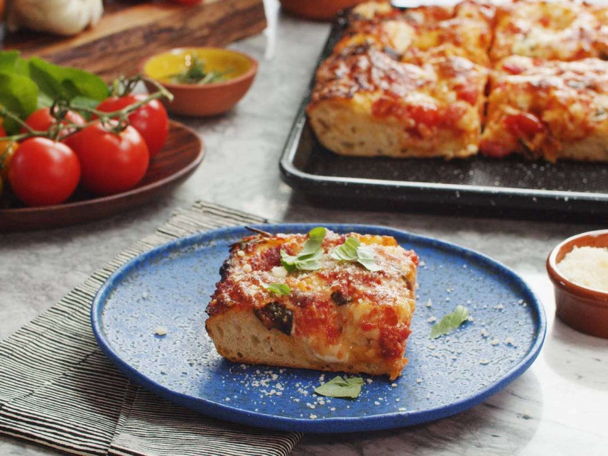

INGREDIENTS
- 1 cup (250g) bread flour
- 1 cup (250g) all-purpose flour
- 1 tablespoon coarse semolina (optional)
- 3½ teaspoons kosher salt
- 1 tablespoon (14g or 2 packages) active dry yeast
- 1⅓ cup (320ml) lukewarm water*
- 3 tablespoons (50ml) extra-virgin olive oil
- 2 teaspoons honey
- Flaky maldon sea salt
- Fresh chopped rosemary or thyme, optional
- Roasted Garlic Butter, optional (recipe in Notes)
Crushed San Marzano Sauce:
- 28-ounce can of whole San Marzano tomatoes, drained
- 2 tablespoons extra-virgin olive oil
- 4 garlic cloves, minced or grated fine
- ½ cup fresh basil leaves (½-ounce clamshell)
- 2 teaspoons balsamic vinegar
- ¾ teaspoon kosher sea salt
- Freshly cracked black pepper
For the Pizza:
- 1 cup grated mozzarella (low-moisture)
- 1 cup grated Asiago or Romano cheese
- ⅓ cup Parmigiano Reggiano
- 1 cup cherry tomatoes
- 4 ounces fresh mozzarella ciliegine or burrata pearls, torn in half